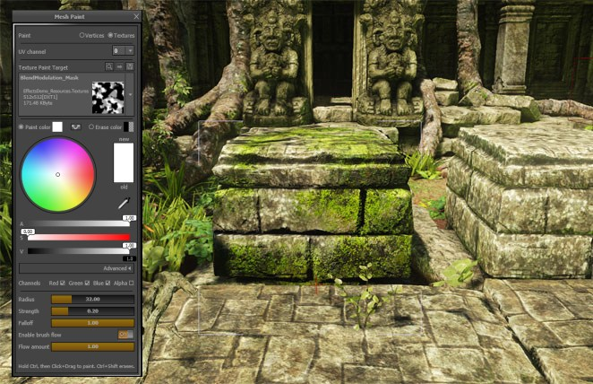
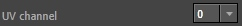
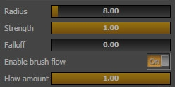
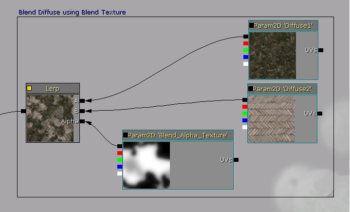

UDN
Search public documentation:
TexturePaintReferenceKR
English Translation
日本語訳
中国翻译
Interested in the Unreal Engine?
Visit the Unreal Technology site.
Looking for jobs and company info?
Check out the Epic games site.
Questions about support via UDN?
Contact the UDN Staff
日本語訳
中国翻译
Interested in the Unreal Engine?
Visit the Unreal Technology site.
Looking for jobs and company info?
Check out the Epic games site.
Questions about support via UDN?
Contact the UDN Staff
텍스처 페인트 참고서
문서 변경내역: Wes Fudala 작성. 홍성진 번역.
개요

간단 안내
- 텍스처 페인트 모드를 활성화시키고 메시 액터를 선택합니다.
- 메시에 할당된 머티리얼이 칠하려는 텍스처를 활용하는지 확인합니다.
- 사용하려는 UV 채널고하 칠하려는 텍스처를 선택합니다.
- 페인트 색을 설정하고 다른 브러시 속성을 알맞게 조절합니다.
- Ctrl 키를 누른 상태로 메시를 클릭하고 드래그하여 페인트를 뿌립니다!
텍스처 페인트 모드
 그리고서 툴 패널 상단의 동글 버튼을 텍스처 로 바꿉니다.
이 모드에서는 칠 작업 편의를 위해 일부 에디터 기능이 제한됩니다만, 카메라 이동이나 선택처럼 일반적인 에디터 작업은 대부분 가능합니다. 또 한가지, 퍼스펙티브 뷰포트가 강제로 실시간 모드 로 들어가는데, 필수인 부분입니다.
그리고서 툴 패널 상단의 동글 버튼을 텍스처 로 바꿉니다.
이 모드에서는 칠 작업 편의를 위해 일부 에디터 기능이 제한됩니다만, 카메라 이동이나 선택처럼 일반적인 에디터 작업은 대부분 가능합니다. 또 한가지, 퍼스펙티브 뷰포트가 강제로 실시간 모드 로 들어가는데, 필수인 부분입니다.
메시에 칠하기
 페인트 브러시는 커서 아래 메시상의 점을 중심으로 하여, 메시 지오메트리의 표면 노멀을 따라 투영되는 원통형으로 생각해 볼 수 있습니다. 원형 브러시 윤곽선을 통해 브러시 반경이 표시됩니다. 내부원은 브러시의 감쇠 (또는 내부 반경)를 나타냅니다. 브러시 중심에서 삐져나온 작은 선은 메시의 표면 노멀입니다.
칠하려면 Ctrl 키를 누른 상태로 메시 표면을 클릭하고 드래그합니다. Shift 키도 같이 누르면 지울 수도 있습니다.
클릭할 때마다, 그리고 마우스 위치가 (드래그하여) 변할 때마다 페인트를 표면에 뿌립니다. 또 한가지, 브러시 플로우 옵션이 켜진 경우엔 씬이 렌더될 때마다 매번 페인트를 뿌립니다.
참고로 퍼스펙티브 뷰포트에서만 칠할 수 있습니다.
페인트 브러시는 커서 아래 메시상의 점을 중심으로 하여, 메시 지오메트리의 표면 노멀을 따라 투영되는 원통형으로 생각해 볼 수 있습니다. 원형 브러시 윤곽선을 통해 브러시 반경이 표시됩니다. 내부원은 브러시의 감쇠 (또는 내부 반경)를 나타냅니다. 브러시 중심에서 삐져나온 작은 선은 메시의 표면 노멀입니다.
칠하려면 Ctrl 키를 누른 상태로 메시 표면을 클릭하고 드래그합니다. Shift 키도 같이 누르면 지울 수도 있습니다.
클릭할 때마다, 그리고 마우스 위치가 (드래그하여) 변할 때마다 페인트를 표면에 뿌립니다. 또 한가지, 브러시 플로우 옵션이 켜진 경우엔 씬이 렌더될 때마다 매번 페인트를 뿌립니다.
참고로 퍼스펙티브 뷰포트에서만 칠할 수 있습니다.
페인트 타겟
텍스처 페인트 모드로 전환하고 Texture2D 오브젝트를 사용하는 액터를 선택할 때, 다음과 같은 옵션을 선택할 수 있습니다:
| 타겟 | 설명 |
|---|---|
|  | 현재 선택한 액터에 사용가능한 UV 채널이 들어갑니다. 여기 선택된 UV 세트가 텍스처 페인트 타겟 콤보 박스에 선택된 텍스처에 페인트를 매핑시키는 데 사용됩니다. |
 | 이 콤보 박스는 현재 선택한 액터에 사용되는 텍스처(Texture2D) 목록이 들어갑니다. 이 콤보 박스를 사용하여 칠하려는 텍스처를 선택하십시오. 노멀맵으로 체크된 텍스처는 칠할 수 있는 텍스처 목록에 나타나지 않습니다. |
| 바로가기 | 설명 |
|---|---|
 | 콘텐츠 브라우저에서 선택한 텍스처를 쉽게 찾아줍니다. (Ctrl + Shift + T) |
| 칠을 하면 텍스처 원본도 수정합니다. 적절한 텍스처 압축, 밉맵 생성, 썸네일 업데이트 작업을 통해 텍스처 애셋을 마무리합니다. (Ctrl + Shift + C). 툴을 빠져나갈 때 수정된 텍스처 각각에 대해 자동으로 작업해 주니, 마무리를 깜빡하더라도 걱정할 필요가 없습니다. | |
| 현재 선택된 텍스처가 들어있는 패키지를 저장해 줍니다. |
색 칠하기
텍스처 페인트 모드로 색 데이터(빨녹파)를 메시에 직접 칠할 수 있으며, 그 데이터는 선택한 UV 세트를 사용하여 타겟 텍스처에 매핑됩니다. 이 모드는 머티리얼이 텍스처 컬러 데이터와 픽셀 셰이더를 재밌는 방식으로 합치도록 환경설정되어 있을 때 좋습니다.| 색 옵션 | 설명 |
|---|---|
 | 칠할 때 (Ctrl + LMB + Drag) 뿌릴 색입니다. 견본에서 현재 색을 미리볼 수 있습니다. 툴에 내장된 색 선택기 를 사용하여 색을 설정할 수 있습니다. |
 | 지울 때 (Ctrl + Shift + LMB + Drag) "지우개"로 사용할 색입니다. 견본에서 현재 색을 미리볼 수 있습니다. 툴에 내장된 색 선택기 를 사용하여 색을 설정할 수 있습니다. |
 | 칠할 색 과 지울 색 을 맞바꿉니다. |
 | 페인트 브러시에 영향받을 색/알파 채널을 선택하는 박스입니다. |
브러시 세팅
여러가지 브러시 세팅에 대한 설명입니다. 슬라이더가 붙어있는 옵션의 경우, 클릭 후 드래그하여 값을 빠르게 바꿀 수도 있고, 클릭 후 수치를 입력하여 정확한 값을 입력할 수도 있습니다.
| 세팅 | 설명 |
|---|---|
| 반경 | 브러시의 반경으로 언리얼 유닛 단위입니다. 추가로 브러시는 이 반경의 반에 해당하는 만큼 깊이에 따른 감쇠를 갖습니다. |
| 세기 | 페인트를 칠할 때 클릭하거나 커서를 움직일 때마다 뿌릴 페인트 양입니다. 브러시 플로우 가 켜진 경우에도, 이 값의 일정 비율(플로우 양) 만큼이 표면에 적용됩니다. |
| 감쇠 | 거리에 따라 브러시가 감쇠되는 방식을 설정합니다. 1.0 이면 브러시 중심에서만 100% 이고 브러시 반경에서 사라질 때까지 선형 감쇠됩니다. 0.5 면 반경 절반까지 100% 이다가 그 후 선형 감쇠됩니다. 0.0 이면 전체 반경에 100% 세기를 유지합니다. 참고로 깊이-기반 감쇠 는 세팅과 무관하게 항상 활성 상태입니다. |
| 브러시 플로우 켜기 | 커서를 움직이지 않아도 프레임이 렌더될 때마다 브러시에 페인트를 뿌리도록 하는 옵션입니다. 에어브러시와 비슷한 결과를 냅니다. |
| 플로우 양 | 브러시 플로우 켜기 가 on 일 때, 매 프레임마다 뿌려지는 브러시의 세기를 브러시 세기의 일정 비율로 설정합니다. |
머티리얼 구성
